근래 주력 키보드를 교체하면서 내가 그동안 써온 기계식 키보드의 수를 세보니 어느새 그 수가 10대에 달했다. 기간도 대략 10여 년 정도가 되었는데 그동안 여러 키보드를 바꿔가며 써오다보니 어느새 기계식 키보드가 일종의 취미가 되어버렸다. 그동안 써오던 키보드 들도 떠올릴 겸 기억을 되살려 연대기를 써보기로 했다.
기계식 키보드란 물건을 접한 건 일산의 어느 PC방 에서였다. 시간이 어중간하게 붕 떠버린 탓에 들어간 PC 방은 당시로는 상당히 최신식이었다. 게임 로그인을 하려 무심코 키보드 위에 손을 얹어 타이핑을 하는 데 손 끝에서 느껴지는 감각이 뭔가 신선했다. 그동안 경험해오던 키보드와는 뭔가 다른 색다른 키감이었다. 어느새 그 독특한 키감에 반해 하려던 게임은 안하고 한참을 키보드 타이핑만 했던 것 같다. 그때는 몰랐지만 그 키보드는 체리 청축 키보드였다.
집에 돌아와 찾아보니 그것이 바로 기계식 키보드라는 것 같았다. 하지만 가격이 만만치 않은 탓에 쉽게 지르지 못하고 있다가 1년에 한 번 뿐인 생일 선물 찬스를 이용해 첫 기계식 키보드를 가질 수 있게 되었다. 그 때가 2012년 말이었다.
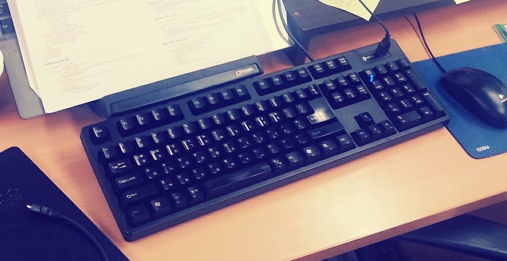
나의 첫 기계식 키보드는 아이락스 제품이었다. 사실 그 때만 해도 기계식 키보드 스위치의 종류가 다양하고 스위치 별로 키감이 천차만별이라는 사실을 몰랐다. 그래서 초보자에게 제일 추천한다는 체리 적축 스위치의 키보드를 골랐다. 그렇게 고대하던 택배 상자를 열고 처음으로 키보드를 타건해보는 순간, 허무한 실망감을 금치 못했다. 이 느낌은 내가 일산 PC방에서 느꼈던 느낌과는 전혀 다른 느낌이었다. 상쾌하게 찰칵이는 키감을 기대했지만 손 끝에 느껴지는 감각은 심심하기 그지 없었다. 사실 이전까지 써오던 멤브레인 키보드와 다른 게 무언가 라는 생각까지 들었다. 하지만 바로 새로운 키보드를 지르기에는 가격이 만만치 않았던 터라 그 키보드를 열심히 쓰기 시작했다.
두 번째 키보드도 첫 번째 키보드와 마찬가지로 다음 해 생일 찬스를 이용해 받았다. 스위치 별로 키감이 상당히 다르다는 사실을 뼈저리게 느꼈기 때문에 이번에는 신중에 신중을 기울였다. 주변에 기계식 키보드를 사용하는 동료들 책상을 돌아다니며 서로 다른 키감을 몸으로 직접 느껴보기도 했다. 장고의 시간 끝에 나의 선택은 체리 갈축이었다. 청축을 사무실에서 쓰기에는 소음이 너무 심했고, 적축보다는 구분감이 좀 더 느껴지기를 원했기 때문이었다. 그렇게 고른 키보드 모델은 레오폴드 FC660M 이었다.
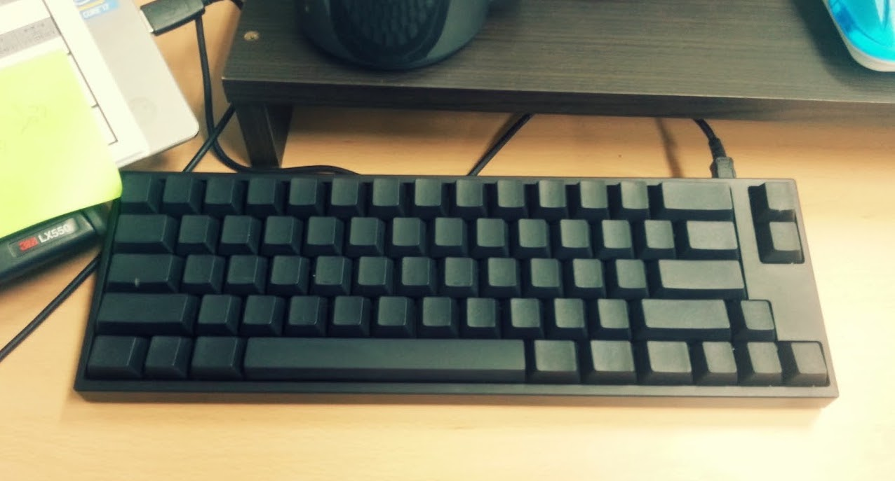
사진에서 보다시피 이 키보드는 60% 배열이었다. 이전에 쓰던 아이락스 제품은 풀 배열이었는데 풀 배열 보다는 마우스까지의 동선이 짧은 텐키리스 배열이 더 낫다고 판단했고, 기왕 짧아지는 거 텐키리스보다 짧은 FC660M 의 배열을 사용해보기로 했다.
선택의 결과는 대만족이었다. 체리 갈축 스위치의 키감도 마음에 들었고, 배열도 마음에 들었지만 예상치 못하게 내 만족감을 배가시킨 것은 키캡의 재질이었다. 살짝 오돌토돌한 질감의 키캡은 타이핑의 즐거움을 더욱 더해주었다. 덕분에 이 키보드를 상당히 오랫동안 주력 키보드로 사용했었다.
FC660M 갈축에 대만족을 하고 있었지만 이쯤되니 다른 키보드들의 느낌은 어떨까 궁금해졌다. 먼저 일산의 이름모를 PC방에서 처음으로 기계식 키보드의 즐거움에 눈뜨게 해주었던 체리 청축 스위치의 키보드를 하나 더 사보기로 했다. 모델은 이전과 동일하게 레오폴드 FC660M 이었는데 이 배열에 상당히 만족하고 있었기 때문에 굳이 다른 모델로 넘어갈 필요성을 느끼지 못했다. 그렇게 세 번째 키보드, FC660M 체리 청축 키보드를 들이게 된다.
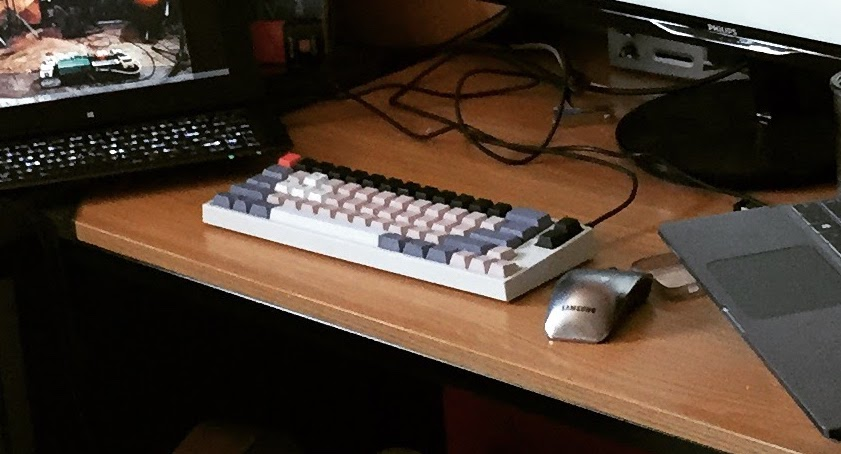
이쯤부터 키보드를 꾸미는 데에도 재미를 붙이기 시작했다. 내심 알록 달록한 키캡으로 키보드를 꾸미고 싶었지만 그런 포인트 키캡을 구하는 것이 쉽지 않았다. 마침 FC660M 청축 키보드의 키캡이 무각 흰색이었던 덕에 문구점에서 염료를 따로 사다가 집에서 키캡 염색을 해보기도 했다.
당시 회사에는 기계식 키보드를 사용하는 동료가 꽤 있었는데 그 중 하나가 리얼포스였다. 같은 팀 과장님이 사용하던 키보드였는데 가끔 그 분 자리를 지나갈 때 들리던 도각 도각 거리던 소리가 상당히 마음에 들었다. 리얼포스는 당시 해피해킹과 함께 대표적인 무접점 키보드 중 하나였는데 둘 다 가격대가 30~40만원 대로 상당히 비쌌기 때문에 사실 엄두도 내지 못하고 있었다. 그렇게 군침만 흘리던 차에 레오폴드에서 새로운 무접점 키보드 모델을 출시하게 된다. 바로 FC660C 였는데 가격은 무려 21만 9천원! 리얼포스나 해피해킹보다 무려 10만원 이상 싼 제품이었다. 심지어 그 때까지 내가 만족스럽게 써오던 FC660M 과 동일한 배열의 키보드이니 이건 안 지를래야 안 지를 수가 없었다. 그렇게 네 번째 키보드, FC660C 를 들이게 된다.
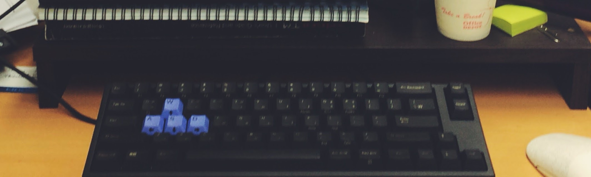
키감은 역시 기대했던 대로 대만족이었고 배열 역시 이미 익숙하게 사용중인 배열이었기 때문에 단숨에 내 주력 키보드로 등극하게 된다. 하지만 문제는 무접점 키보드의 키캡은 다른 기계식 키보드의 키캡과 호환이 되지 않기 때문에 키캡 꾸미가가 어렵다는 사실이었다. 하지만 이미 이 키보드에 마음을 빼앗긴 나는 고민없이 지갑을 열고 FC660C 를 꾸며줄 키캡을 구하기 시작했다. 당시 구매했던 키캡은 해피해킹 화이트 키캡과 리얼포스 10주년의 키캡이었다. 키캡 구매에만 얼추 10만원 가까운 금액을 지출했던 것 같다. 하지만 그렇게 조합된 건담 테마 느낌의 컬러에 상당히 만족할 수 밖에 없었다.
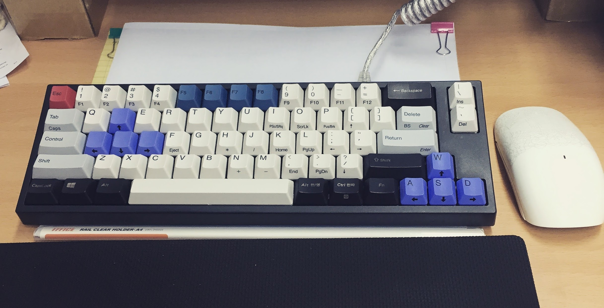
그 즈음 massdrop.com 이라는 사이트를 꽤 자주 들락거렸다. 현재는 drop.com 으로 변경된 이 사이트는 키보드를 상당히 많이 취급하고 있었다. 어느 날 ergodox 라는 이름의 키보드에 대한 group buy 소식이 올라오게 된다. ergodox 는 키보드가 두 쪽으로 분리되는 형태에다 배열 역시 상당히 괴랄했는데 괜시리 눈길이 가기 시작했다. 처음 보기에는 괴랄해보이는 저 배열도 어쩐지 적응만 잘 하면 꽤 즐거운 타건 경험을 선사해주지 않을까 하는 생각이 들었다. 무엇보다 내 눈길을 끌었던 부분은 바로 programmable 키보드라는 문구였다. 즉, 키보드의 각 버튼마다 어떤 키가 입력되게 할지를 커스터마이징이 가능하다는 말이었다. 400불을 넘는 사악한 가격에 조금 마음이 걸리긴 했지만 고민 끝에 구매 버튼을 용감 무쌍하게, 그리고 힘차게 눌렀다.
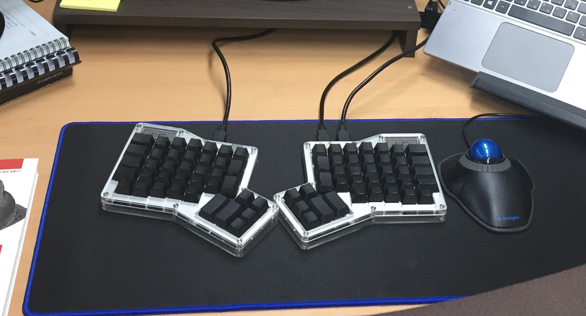
하지만 그 키보드를 받아보는 데는 상당히 오랜 기간을 필요로 했다. 이미 만들어져있는 공산품을 배송해주는 것이 아니라 구매자를 미리 모은 다음에 제작에 들어가는 제품이었기 떄문이었다. 덕분에 6개월이라는 길고 긴 인내의 시간을 견뎌낸 후 2015년 6월에야 내 다섯번째 키보드인 ergodox 를 받아볼 수 있었다.
ergodox 의 스위치는 체리 백축을 선택했다. 당시까지는 적축, 청축, 갈축, 흑축이 전부인 줄 알았지만 그 외에도 스위치의 종류는 무궁무진했다. 당시 기계식 스위치 중에는 갈축을 가장 선호했지만 다른 스위치를 사용해보고 싶기도 했다. 그래서 갈축과 유사한 구조지만 키압이 더 높은 백축을 고르기로 했다. 키압 덕분에 갈축보다 구분감이 더 강했고 나름대로 만족스러운 스위치였지만 타이핑을 조금만 오래하면 손가락에 피로감이 느껴졌다.
이미 기계식 키보드에 흠뻑 매료된 나는 바로 다음 키보드 물색에 돌입했다. 하지만 이미 ergodox 의 커스터마이징에 맛들린 나는 더이상 평범한 키보드로 만족하기 어려웠다. 애시당초 programmable 한 키보드가 그리 많지 않았기 때문에 마음에 드는 모델을 찾는 것이 쉽지 않았다. 그러던 차에 planck 라는 키보드 모델을 알게 되었다. 이 키보드는 미니 배열 중 미니 배열로 무려 40% 배열의 키보드였다. 심지어 qmk_firmware 라는 오픈소스 펌웨어를 통해 상당히 높은 자유도의 커스터마이징이 가능한 programmable 키보드였기 때문에 고민없이 다음 키보드로 낙점했다.
혹시나 싶어서 중고나라를 뒤져봤는데 운 좋게 판매중인 물건이 한 건 있었다. 바로 구매 의사를 밝히고 약 10만원이라는 비교적 저렴(?)한 가격에 바로 키보드를 업어왔다. 내 생애 여섯 번째 기계식 키보드였다.
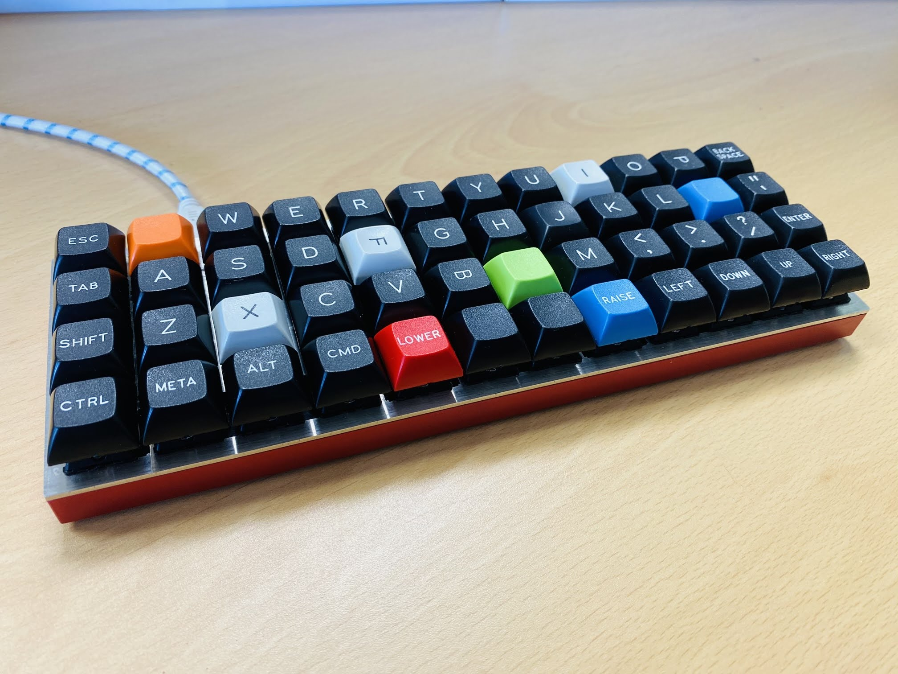
당시 구매했던 물건은 체리 청축 스위치를 끼고 있었는데 이를 사무실에서 그대로 사용할 수는 없었다. 어떤 스위치로 교체할까 고민하다가 여러 사람 입에 명품이라고 오르내리던 구흑축 스위치로 변경하기로 결정했다. 퇴근길에 철물점에 들러 실납과 인두기를 구매하여 바로 작업에 들어갔다. 하지만 납땜을 한 번도 해본 적이 없던 내게 이 작업은 상당히 어려웠다. 기존 청축 스위치를 디솔더링하는 단계에서 이미 실패했던 탓에 그냥 키보드 공방에 소정의 공임비를 주고 작업을 맡겼다.
planck 키보드는 특이하기 짝이 없는 배열이었지만 적응은 생각보다 어렵지 않았다. 그 이유는 바로 키 레이아웃을 내가 직접 지정했기 때문이었다. 어떤 레이아웃을 사용할지에 대해 여러 차례 고민과 시행착오를 거치면서 planck 는 점차 내 최애 키보드가 되기 시작했다.
당시 qmk_firmware 를 뜯어고치면서 편의를 위해 여러 기능을 추가했다.
첫 번째로 한글 전환과 영문 전환을 담당하는 키를 따로 할당했었다. 본래 한영키는 toggle 형태로 한 번 누르면 한글로, 다시 한 번 누르면 영문으로 바뀌는 형태다. 이 toggle 의 문제점은 현재가 영문인지, 한글인지를 알고 있어야 한다는 점이다. 덕분에 일단 타이핑을 시작했다가 다시 한영키를 눌러 한영 전환을 하는 일이 많았다. 이 문제를 방지하기 위해 현재 한영 상태를 지정하는 boolean 변수를 하나 할당하는 방식을 통해 한글 전환키와 영문 전환키를 따로 구현했다.
두 번째 기능은 방향키 반복 기능이었다. 나는 평소에도 vim 을 즐겨 사용하는데 습관처럼 애용하는 기능 중 하나가 바로 숫자키+방향키였다. vim 은 숫자키를 누른 다음에 다른 명령키를 누르면 해당 명령을 숫자만큼 반복해주는 기능을 제공하고 있는데 이게 상당히 편했다. 하지만 문제는 vim 바깥에서는 사용할 수 없다는 점이다. 그래서 이와 동일한 기능을 키보드의 펌웨어 자체에 구현했다.
세 번째 기능은 특정 응용 프로그램으로 바로 전환할 수 있는 기능을 만들었다. 예를 들면, 특정 키의 조합을 누르면 바로 chrome 이 켜진다던가 하는 기능이다. 이 기능의 구현은 생각보다 쉬웠다. 그냥 “cmd+space (mac 의 spotlight 진입)” -> “chrome 타이핑” -> “엔터” 로 이어지는 매크로만 만들면 되었기 때문이다.
이 외에도 qmk_firmware 개조를 통해 자잘한 기능들을 심게 되면서 손가락이 planck 키보드에 완벽히 적응하기 시작했다. 덕분에 이제는 planck 배열이 아니면 코딩할 때 영 불편한 지경이 이르렀다.
planck 키보드를 만족스럽게 사용하면서도 나는 습관처럼 여러 기계식 키보드 사이트를 들락거렸다. 혹시나 다른 재미있는 키보드를 발견할 수 있을까 하는 기대에서 였다. 하지만 문제는 이미 planck 키보드에 너무 적응을 해버렸고 이 안락함에서 도저히 빠져나오고 싶지 않다는 것이었다. 그러던 차에 내 눈길을 사로잡는 새로운 키보드를 발견하게 된다. 바로 let’s split 키보드였다.
let’s split 은 이름에서도 알 수 있듯이 반으로 분리된 형태의 키보드다. 거기다가 배열 역시 planck 와 동일하게 12x4 인 40% 배열이었다. 심지어 planck 처럼 qmk_firmware 를 통한 커스터마이징이 가능했다. 큰 고민없이 let’s split 은 내 생애 일곱 번째 기계식 키보드가 되었다.
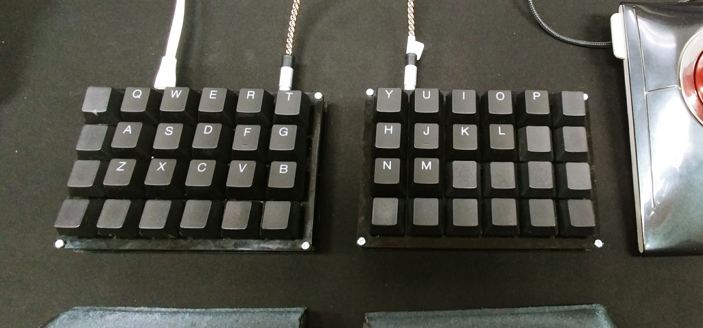
한동안 planck 와 let’s split 은 내 주력 키보드였다. 회사에서는 planck 를 쓰고 집에서는 let’s split 을 쓰는 식이었다. 이 키보드들에 완벽하게 만족하면서도 습관처럼 키보드 사이트에 들락거리기를 멈추지 않았던 내게 새로운 키보드가 눈에 띄기 시작했다. 아니, 사실 새로운 키보드는 아니었다. 당시 사용하고 있던 planck 와 동일한 모델의 키보드였기 때문이다. 하지만 내가 사용하던 키보드와 다른 점은 바로 hot-swap 기능을 가지고 있다는 것이었다.
hot-swap 은 스위치를 납땜없이 손쉽게 교체할 수 있는 기능이다. 보통의 경우라면 크게 효용이 없는 기능이겠지만 이런 저런 스위치의 키감이 너무도 궁금했던 내게는 꼭 필요한 기능이었다. 이 역시 중고 거래 사이트를 통해 구매했는데 가격도 이전과 동일하게 약 10만원 가량 주었던 것으로 기억한다. 여덟 번쨰 기계식 키보드였다.
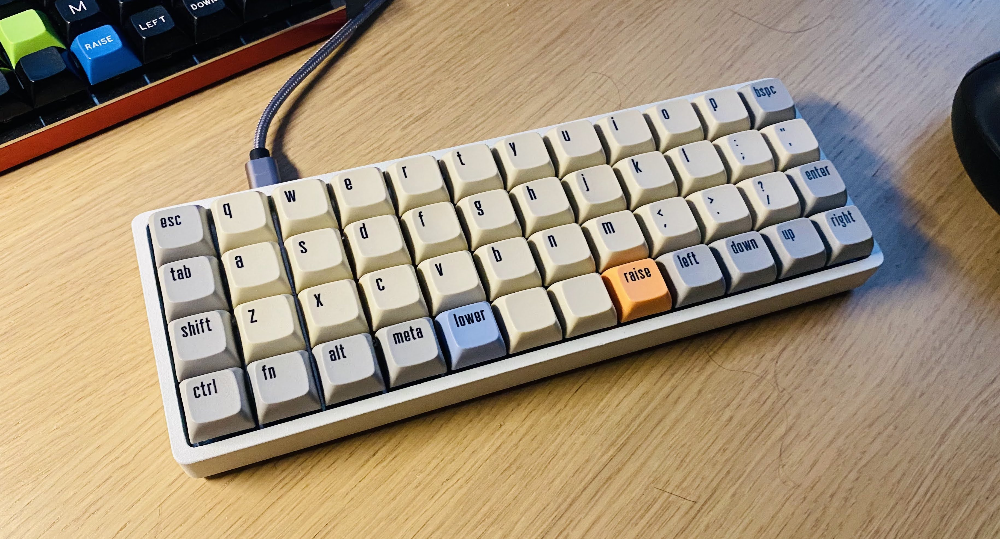
hot-swap 기능을 가진 planck 를 사용하고부터는 심심하면 키보드 스위치 쇼핑을 하곤 했다. 세상에는 어마어마한 수의 키보드 스위치들이 있었고 이를 매번 교체해가면서 매번 새 키보드를 사용하는 느낌을 받곤 했다. 더욱 좋은 점은 키 배열은 이미 내가 세상 익숙한 배열을 유지한 상태에서 키감만 바꿀 수 있다는 점이었다. planck 의 40% 미니 배열 덕에 스위치 구매에 들어가는 비용도 풀 배열 보다는 적게 들어간다는 이점도 있었다.
키보드 스위치를 자주 바꿔가면서도 한 가지 아쉬운 점은 있었다. 오만 가지 키보드 스위치는 전부 바꿀 수 있었지만 무접점의 도각거리는 키감을 주는 스위치는 없었기 때문이다. 이전에 이미 FC660C 를 통해 무접점 키보드의 매력을 한 번 느낀 터라 무접점의 도각거림에 대한 갈증이 항상 있었다. 하지만 그렇다고 이제와서 다른 무접점 키보드로 넘어가기에는 planck 배열을 포기할 수가 없었다. 꽤 오랜 기간 동안 “planck 배열의 무접점 키보드가 나오면 얼마나 좋을까” 하는 아쉬움을 가지고 있었다.
이러한 갈증을 느낀 사람이 나 하나만은 아니었나보다. planck 배열의 무접점 키보드를 공동 제작하겠다는 소식을 우연찮게 접하게 되었다. 이 새로운 키보드는 이름도 찬란한 conundrum keyboard 였다. planck 와 동일하게 qmk_firmware 를 통한 커스터마이징이 가능했다. 고민을 할 여유도, 그럴 필요도 없이 나는 홀린 듯 구매 버튼에 마우스 커서를 올렸다.
하지만 이 키보드를 받아보기까지는 꽤 오랜 기간이 걸렸다. 이 키보드 역시 planck 를 처음 샀을 때와 동일하게 구매자를 먼저 모아놓고 제작을 시작하는 공동 제작이었기 때문이었다. 2021년 3월에 주문한 키보드는 무려 1년 반도 더 지난 후인 2022년 10월에야 받아볼 수 있었다. 내 생애 아홉 번째 기계식 키보드였다.
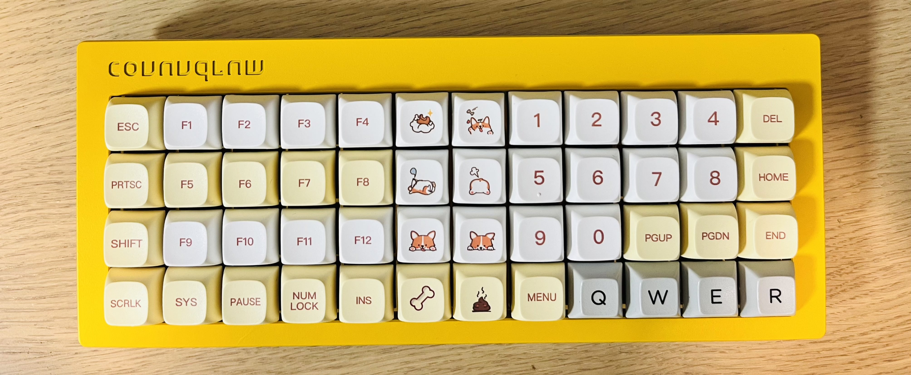
그렇게 받아본 conundrum 키보드의 키감은 훌륭했다. 물론 해피해킹이나 리얼포스의 무접점 키보드에 사용되는 토프레 방식이 아닌 노뿌 방식의 무접점 키보드였기 때문에 키감이 살짝 차이가 있긴 했다. 굳이 소리로 표현하자면 토프레의 무접점이 도각 도각 거린다면 노뿌의 무접점은 보글 보글에 가깝다. 토프레가 아닌 것이 살짝 아쉽긴 했지만 planck + 무접점이라는 나의 오랜 갈증을 채워준 키보드였기 때문에 단숨에 최애 주력 키보드에 올랐다.
그러던 차에 최근 hot-swap 버전의 planck 키보드가 고장이 나버리는 사건이 발생했다. cmd 키가 안눌리기 시작했는데 스위치를 바꿔도 반응이 없는 것으로 봐서는 hot-swap 모듈의 문제거나 PCB 기판의 문제였다. 내가 수리할 수 없는 레벨의 문제였기 때문에 눈물을 머금고 동일한 hot-swap 버전의 planck 키보드를 하나 더 구매했다. 이것이 내 열 번째 기계식 키보드다.
새로운 planck 키보드를 구하고 나서도 고장난 키보드에 대한 아쉬움이 계속 남았다. 어떻게 수리할 방법이 없을까 인터넷을 뒤적이던 차에 신선한 해결 방법을 찾게 된다. 잘 사용하지 않는 키에서 문제의 cmd 키로 와이어링을 한 뒤에 펌웨어 상에서 cmd 키의 위치를 바꿔주는 방법이었다. 바로 시도를 해보기 시작했다. 어차피 여분의 planck 는 구해놨기 때문에 무모하게 시도해볼 수 있었다. 다만 여분의 와이어가 없었던 탓에 실납을 대신 어설프게 이어줬는데 다행히 정상적으로 작동했다. 이로써 고장난 planck 를 다시 살릴 수 있었다.
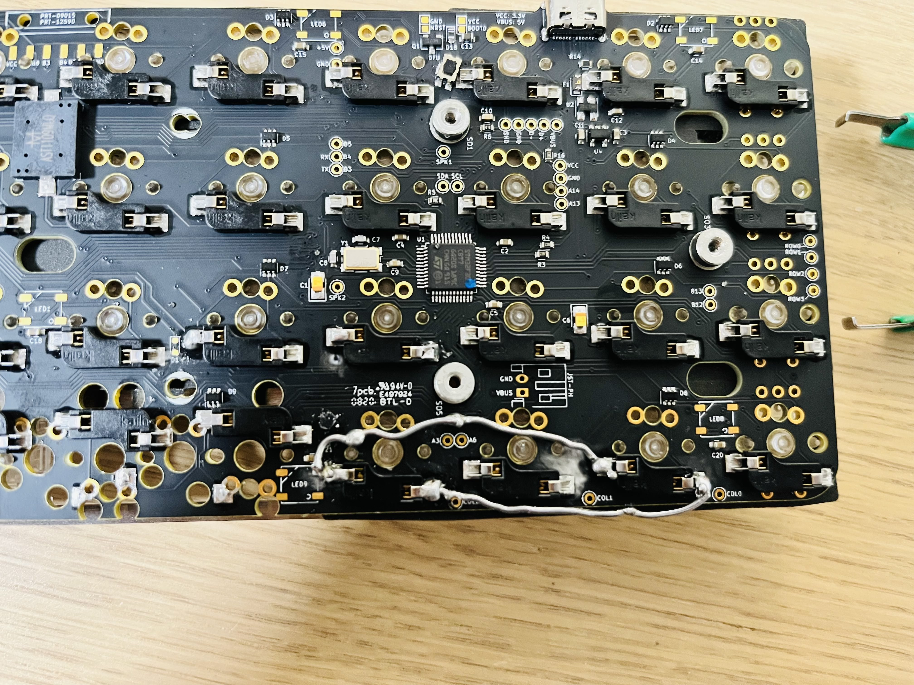
이렇게 현재에는 2대의 planck 와 1대의 conundrum 을 주력으로 사용하고 있다. 두 대의 planck 에는 각각 다른 스위치를 바꿔가면서 새로운 키감을 흠뻑 느끼고 무접점의 키감이 필요할 때는 conundrum 을 사용한다. 이 글도 세 대의 키보드를 번갈아가며 작성하고 있다.
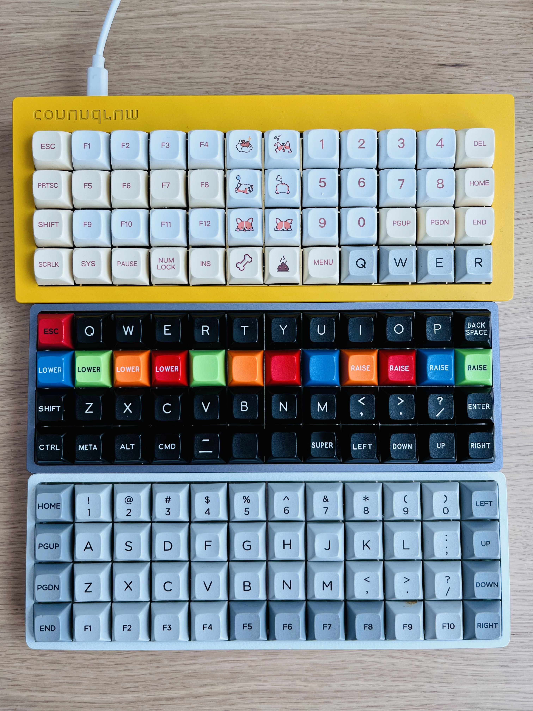
요즘에는 책상 서랍 깊숙이 넣어놓은 ergodox 에 hot-swap 모듈을 이식해볼까 하는 고민을 하고 있다. 오래전에 단종된 IBM Model M 키보드의 버클링 스프링 방식의 키감이 궁금하기도 하다. 10여 년 전에 일산의 어느 PC 방에서 조우한 키보드 덕분에 기계식 키보드의 매력에 빠질 수 있었다. 키보드를 손가락으로 두드리는 행위 자체로 즐거움을 느낄 수 있다는 것을 깨달은 덕에 내 삶에 좋은 취미가 하나 생겼다.